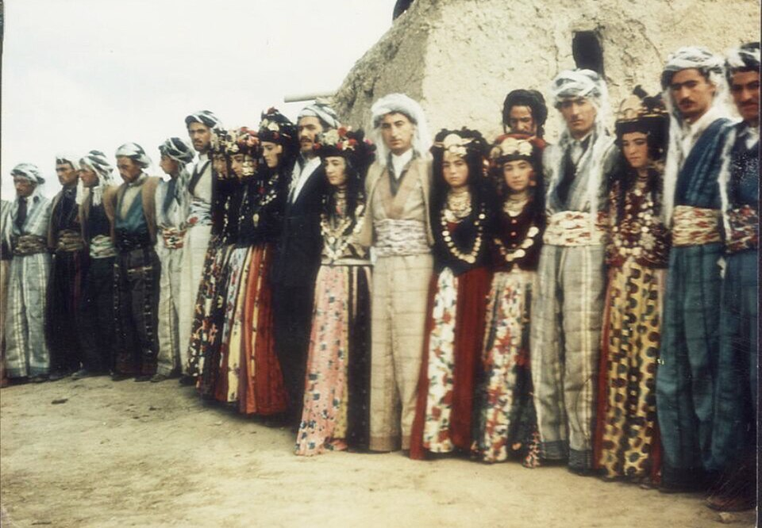
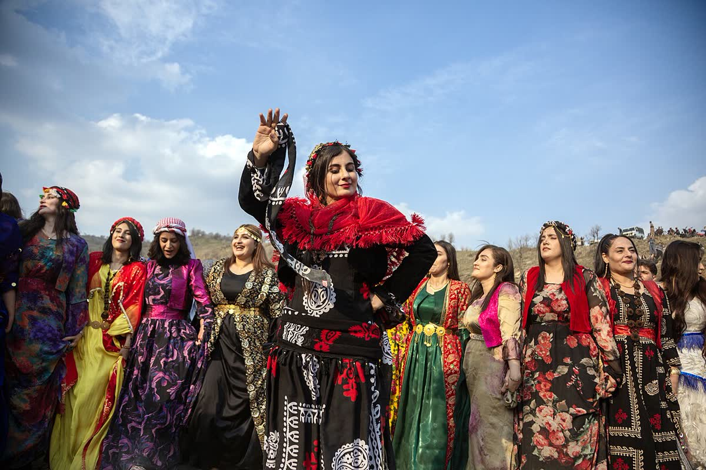
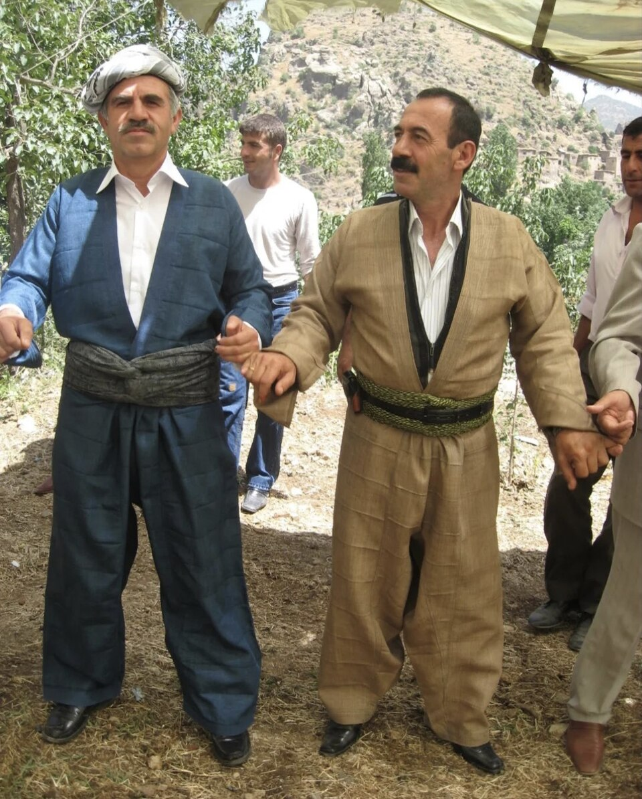

Kapak — Fotoğraf: Cristo Cardoc · CC BY 4.0 · KaynaklarKürt düğünleri; halayı, müziği ve rengârenk kıyafetleriyle bir görsel şölen olarak kabul edilir. Davetli olarak katılacaksanız ya da düğün sahibi ailedenseniz "ne giymeliyim?" sorusu doğal olarak gündeme gelir. Bu rehberde kadınlar için kına, nişan ve düğün ayrımına göre kirasfistan seçimini, erkekler için şal û şepik ile puşi kombinini, tamamlayıcı aksesuarları ve halaya uygun kumaş önerilerini bir arada bulacaksınız.
Kadınlar İçin Kirasfistan Seçimi
Kadın davetlilerin ve aile üyelerinin ilk tercihi çoğunlukla kirasfistan olur. Ancak her davetin kendi havası vardır; kına, nişan ve düğün için farklı renk ve kumaş tercihleri öne çıkar.
Kına Gecesinde Ne Giyilir?
Kına gecesinin geleneksel rengi kırmızı ve bordo tonlarıdır. Kadife üzerine sim işlemeli kirasfistanlar, kına gecesinin ağırbaşlı ve sıcak atmosferine çok yakışır. Gelinin yakın çevresi genellikle kırmızı tonlarında birlik sağlar; davetliler ise bordo, gül kurusu veya mürdüm gibi yakın tonlarla bu uyuma katılabilir.
Nişanda Ne Giyilir?
Nişan törenleri düğüne göre daha sade bir çerçevede yapılır. Pastel tonlarda saten veya şifon kirasfistanlar hem zarif hem de abartıdan uzak bir seçim olarak kabul edilir. Pudra, mint, lila ve açık mavi gibi renkler nişan davetlerinde sıkça görülür.
Düğünde Ne Giyilir?
Düğün, en gösterişli kıyafetlerin giyildiği gündür. Payetli ve parlak kumaşlar bu davette rahatlıkla tercih edilebilir. Yalnızca iki inceliğe dikkat etmek gerekir: Beyaz ve krem tonları geline ayrılır; gelinin ailesinin belirlediği özel bir renk varsa davetlilerin ona saygı göstermesi beklenir. Bunun dışında zümrüt yeşili, saks mavisi, mor ve fuşya gibi doygun renkler düğün için güvenli ve şık seçimlerdir.
Düğün Sahibi Aile İçin Notlar
Gelin ve damadın anneleri ile yakın akrabaları, davetlilerden bir adım daha gösterişli giyinme eğilimindedir. Aile üyelerinin kıyafetlerinde renk birliği sağlaması, hem fotoğraflarda hem de karşılama sırasında bütünlüklü bir görüntü oluşturur. Bu nedenle düğünden önce ailecek renk ve kumaş konusunda ortak karar almak sık görülen bir uygulamadır. Kına gecesinde aile kadınlarının aynı tonda kirasfistan giymesi de geceye ayrı bir bütünlük katar; bu uyumun misafirler üzerinde güçlü bir izlenim bıraktığı kabul edilir.
Erkekler İçin Şal û Şepik ve Puşi Kombini
Erkek giyiminde geleneksel tercih şal û şepik takımıdır. Şal alt giysiyi, şepik ise ceket bölümünü ifade eder; takım genellikle aynı kumaştan dikilir ve bele sarılan kuşakla tamamlanır. Damat ve yakın aile üyeleri düğünlerde çoğunlukla bu takımı giyer; davetli erkekler ise takım elbiseyle katılabilir ya da geleneksel görünümü tercih edebilir.
Puşi, omuza atılan veya başa sarılan desenli örtüdür ve takımın en tanınan tamamlayıcısıdır. Siyah-beyaz ile kırmızı-beyaz desenler en yaygın olanlarıdır. Şal û şepikle kombinlerken puşinin renginin kuşakla uyumlu olmasına dikkat etmek bütünlüklü bir görünüm sağlar. Takım elbise giyen davetliler de omuza atılan bir puşiyle düğünün ruhuna eşlik edebilir.
Aksesuarlar: Kofi ve Şûtik
Geleneksel kıyafeti tamamlayan iki önemli aksesuar vardır. Kofi, kadınların başına takılan, üzeri pullarla ve bazı yörelerde altın dizileriyle süslenen geleneksel başlıktır; düğünlerde özellikle gelinin yakın çevresindeki kadınlar tarafından kullanılması yaygındır. Şûtik ise bele sarılan kuşaktır; hem kadın hem erkek giyiminde silüeti toparlar ve renk geçişini tamamlar. Kofi, şûtik ve diğer tamamlayıcı parçalar için aksesuar sayfamızı inceleyebilirsiniz.
Halaya Uygun Kumaş ve Kesim Önerileri
Kürt düğününün kalbi halaydır ve saatlerce sürebilir. Kıyafet seçerken bunu hesaba katmak konforu büyük ölçüde artırır:
- Hafif kumaşlar tercih edin: Şifon ve saten, uzun halaylarda kadifeye göre daha az yorar. Kışlık düğünlerde kadife giyilecekse astarının terletmeyen bir kumaştan olması önemlidir.
- Etek boyuna dikkat edin: Yere değen etekler halay adımlarında takılabilir. Elbisenin bilek hizasında bitmesi hem şık hem de güvenlidir.
- Kol yapısını düşünün: Uzun kol uçları zarif görünür; ancak halayda el ele tutuşulacağı için bileği tamamen kapatmayan modeller daha pratiktir.
- Beden bolluğunu koruyun: Halay boyunca kollar sürekli hareket hâlindedir; omuzları saran fakat sıkmayan kesimler hem görüntüyü korur hem de rahat ettirir.
- Ayakkabıyı unutmayın: İnce yüksek topuk yerine kalın topuklu veya düz ayakkabılar uzun süre ayakta kalmayı kolaylaştırır.
Davetliler İçin Pratik İpuçları
- Düğünün köyde mi salonda mı yapılacağını öğrenin; açık hava düğünlerinde mevsime uygun bir şal veya hırka bulundurun.
- Gelinin ve ailesinin renk tercihlerine saygı gösterin; beyaz ve krem tonlarından uzak durun.
- Kıyafetinizi düğünden önce deneyin; özellikle kiralama veya yeni dikim söz konusuysa son provayı ihmal etmeyin.
- Takı ve aksesuarı dengeli kullanın; kofi veya gösterişli bir kolye tek başına yeterli vurguyu sağlar.
- Yedek bir puşi veya ince şal bulundurun; açık hava düğünlerinde akşam serinliğine karşı pratik bir çözümdür.
Sonuç
Kürt düğününde giyim; geleneğe saygı, davetin türü ve konforun dengelenmesiyle şekillenir. Kadınlar için kına, nişan ve düğün ayrımına göre seçilen bir kirasfistan, erkekler için şal û şepik ve puşi kombini her zaman isabetli bir tercihtir. Kararsız kaldığınız noktalar için sık sorulan sorular sayfamıza göz atabilirsiniz.
Kültürden Kareler

